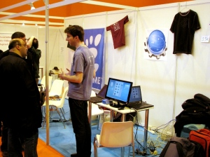
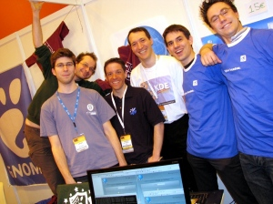
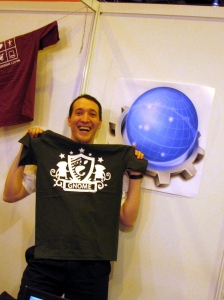

This week was the week of Solutions Linux 2010. A 3-day exhibition held in Paris, gathering companies, LUG and other associations. As always, KDE France was here.
Two years ago we failed to register a booth, last year we were only three people with two laptops, some Kubuntu goodies and a home-printed A2-sized KDE poster. This year we ended up being 5 on the last day, and the booth was stuffed with a 22" monitor, Kubuntu goodies, KDE stickers, KDE T-shirts and a professionally printed 60x60cm Konqueror icon poster, (yes, this amazing icon, thanks Davide!). We are getting better at this booth thing... I think next year we need to rent another table as the one we had was quite crowded.
I think it went quite well. As usual people came to us asking what was new in KDE SC 4.4, but we also met quite a few people completely new to KDE and Linux, asking the embarrassing question: "So, which one is better, KDE or GNOME? -- Well... I am afraid I can't be really objective on that one, why don't you give them both a try? Here is a live cd."
I gave an interview to a journalist of Linux Pratique about Strigi and Nepomuk. I demonstrated the new Dolphin search user interface, sharing tags between Dolphin and Gwenview and sharing ratings between Dolphin and Bangarang. It mostly worked as expected, a sign that these technologies are reaching maturity. 
I am a bit worried about David, though. I am afraid he may be seduced by the dark side. I mean, look at this picture, aren't you concerned as well? 
@Gaël: Thanks for the pictures!
{kind=link}
{kind=link}
{kind=link}